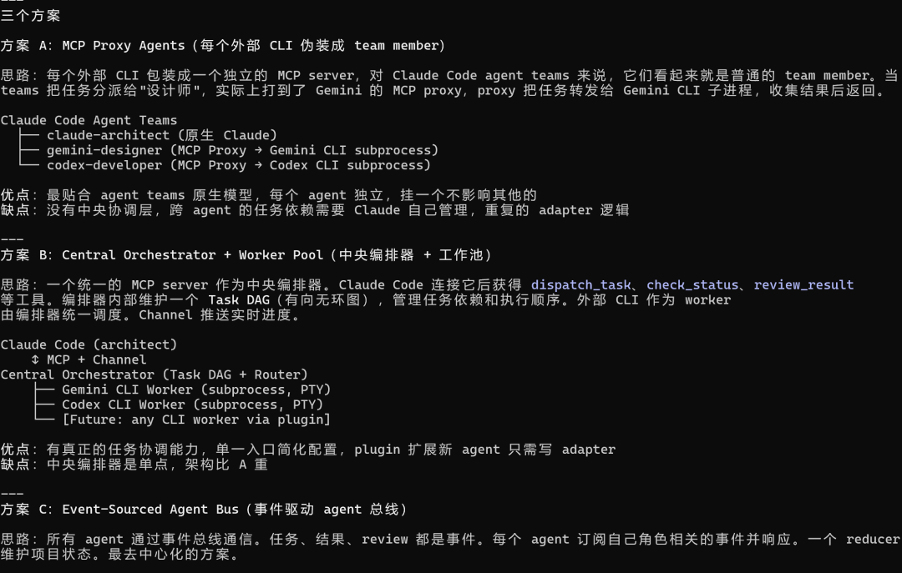
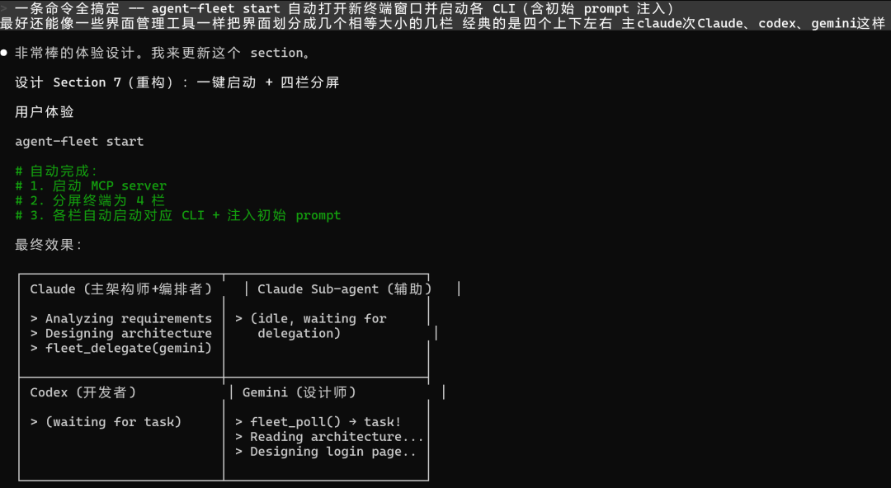
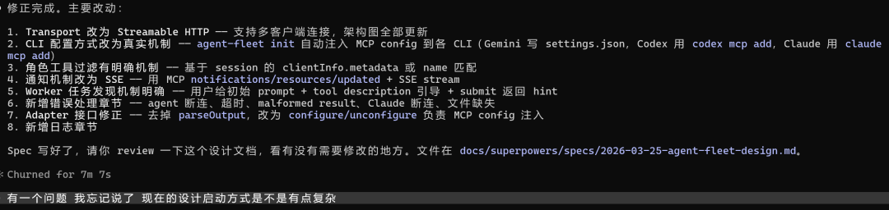
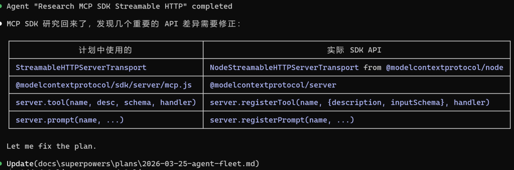
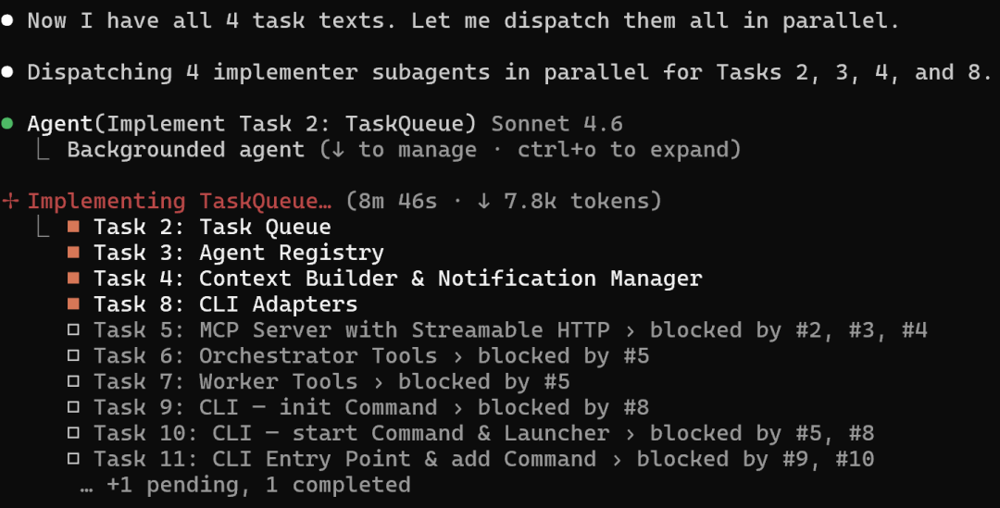
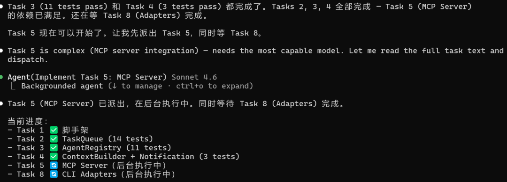
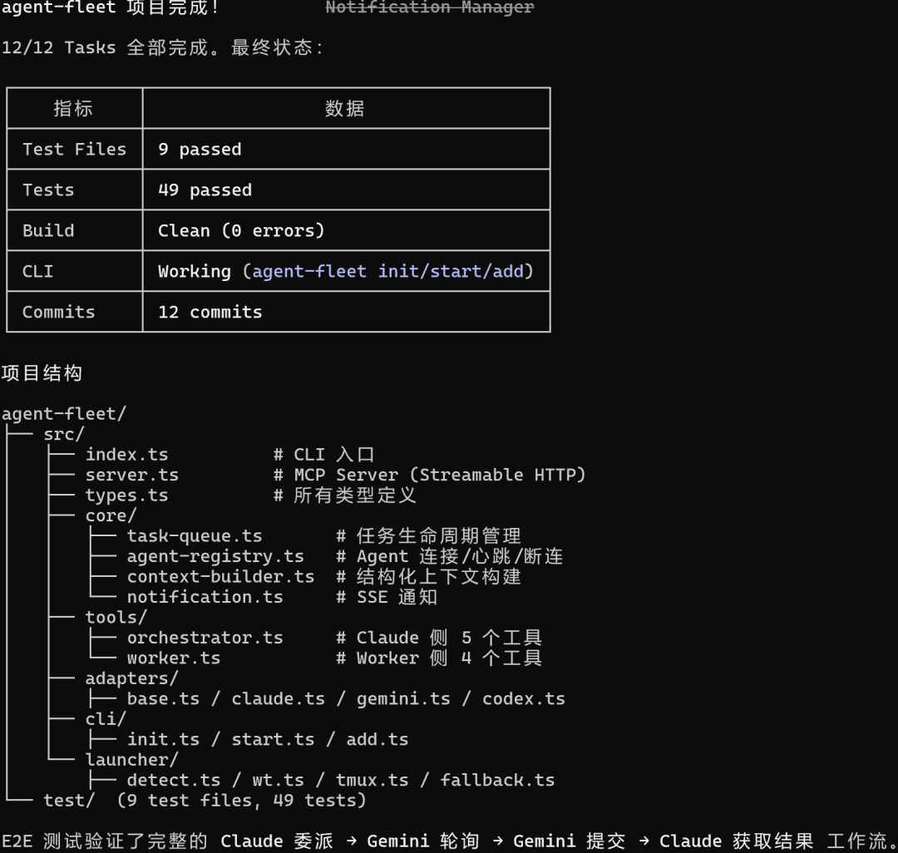
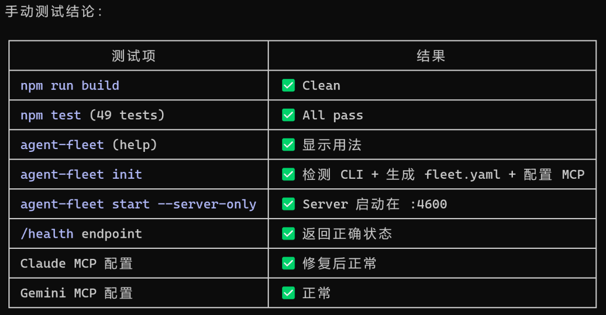
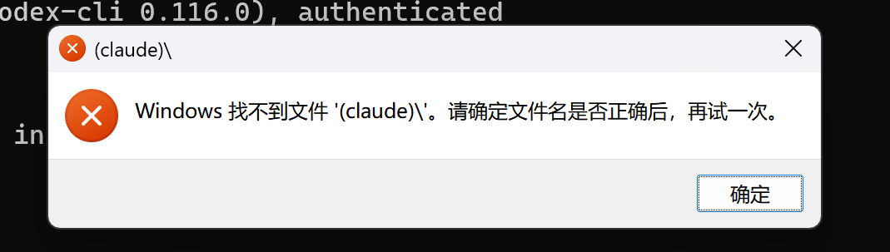

几天前 Anthropic 更新了 Channel 特性，一个粉丝非常激动地给我发消息。
他做了个开源项目叫 agent-bridge，能让 Claude Code 和 Codex 实时双向通信，而且两边的 TUI 都能看到流式输出。比起 CCB 那种后台黑盒式的 agent 调用，这个方向对了。
就是吧，只支持 Claude 和 Codex 两个模型。
我想把 Gemini 也拉进来。三个窗口并排，Claude 在左边拆任务，Gemini 和 Codex 在右边实时刷输出。 每一步推理、每一次文件操作，肉眼可见。
大家好，我是陆徐洲。这篇记录的是我用 Superpowers 技能框架，从零搭建一个三模型协作工具的完整过程。
我跟 Claude 说了这个想法，预期它会直接开始写代码。
没有。它自动触发了 Superpowers 的 brainstorming 流程。
Superpowers 是 Claude Code 的一套第三方技能框架，优先级非常高。高到你说"我想做个XX"，它不会直接动手，而是先拦住你，用一轮轮选择题把模糊想法逼成具体决策。
第一轮问我：基于 agent teams 还是自己搭编排系统？第二轮：做一次性 demo 还是可复用的开源框架？第三轮：接入外部模型用 API 调用还是桥接真实 CLI？
每一轮都是 A/B/C 选项，不选不往下走。

最有价值的转折发生在第四轮。
我说：我想同时看到 Gemini 和 Codex 的 TUI，三个窗口都打开，Claude 一启动 agent teams，另外两个窗口同时动起来。
Claude 的回复是："这推翻了之前的 subprocess 架构。"
原来的设计是用子进程管理 CLI，无头运行，没有 TUI。我这一句话，直接把架构从"后台管理"改成了"三窗口独立运行 + MCP 连接"。同时它还设计了一键启动方案：agent-fleet start 自动检测终端，分屏，注入 prompt。

Brainstorming 结束，Superpowers 自动进入下一阶段：生成 Spec 设计文档，然后触发 spec review。
这步还挺关键的。
Review 结果：3 个致命问题，4 个重大问题。 最严重的一个：我整个通信架构画的是 stdio，但 stdio 是 1:1 的，一个 server 只能接一个 client。三个 CLI 要同时连，必须换成 Streamable HTTP。

如果跳过这步直接写代码，后面全要推翻重来。对底层协议不熟的时候，spec 阶段多花时间是值得的。Superpowers 的 review 机制会派一个独立 agent 用"挑刺"视角审你的设计文档，这种场景下特别管用。
Spec 修完，自动进入 writing-plans skill，输出了 2663 行的实现计划，拆成 12 个 Task，标注好依赖关系和可并行分组。
Plan 也过了一轮 review。这次抓到的问题更隐蔽：计划里写的 MCP SDK 接口名跟实际的对不上。

比如计划里写 server.tool()，实际 SDK 是 server.registerTool()。逻辑是对的，API 签名是错的。不 review 根本发现不了。
执行阶段，我选了 Subagent-Driven 模式：每个 Task 派一个独立 subagent，无依赖的 Task 并行跑。Task 2 任务队列、Task 3 Agent 注册、Task 4 上下文构建、Task 8 CLI 适配器，四个 subagent 同时开工。


最终 12/12 Task 完成，9 个测试文件，49 个测试全过，12 次 commit。

使用claude额外跑了一遍验证，也是全绿。

然后进命令行进行测试 agent-fleet start。
Windows Terminal 弹了个框：找不到文件 (claude)\。

分屏启动时命令拼接的括号没转义，Windows 把 (claude) 当成了路径。修完这个，Codex 窗口又报 failed to connect to remote app server。查了半天，发现是上次调试遗留的 app-server 进程占着端口，新进程启动不了。
49 个测试全过，不代表能用。
e2e 测试验证的是代码逻辑对不对，不管运行环境干不干净。路径转义、端口残留、进程清理，这些全不在测试覆盖范围内。后面又修了 Gemini 的 proxy 绕过、中文路径编码等问题，前后调了两天才真正跑通。
最终效果：一条命令，Windows Terminal 三格分屏。Claude 在左侧拆任务下发，Gemini 右上做设计，Codex 右下写代码。所有输出实时可见。
说下 Channel 这个特性。它的核心是把"轮询等结果"变成"推送通知"。Codex 完成任务后，Claude 不需要反复调 fleet_status 问进度，而是直接收到推送，立刻决定下一步。多任务并行的时候效率差距明显。
回过头看，Superpowers 整套流程走下来，改变的不仅是编码速度。
它改变的是思考结构。
brainstorming 逼你在动手前想清楚"到底要什么"。spec review 在你犯架构级错误之前拦住你。plan review 在执行前修正细节。该踩的坑还是会踩，但至少不会踩到地基级别的坑。
我是陆徐洲，一家 LIMS 公司的 AI 算法负责人。关注我，让我们一起在 AI 落地实践的路上，走得更远。
感谢您阅读我的文章。有任何关于AI提效或者工程落地实践方面的问题都可以加我微信，交个朋友，一起探讨，共同进步。